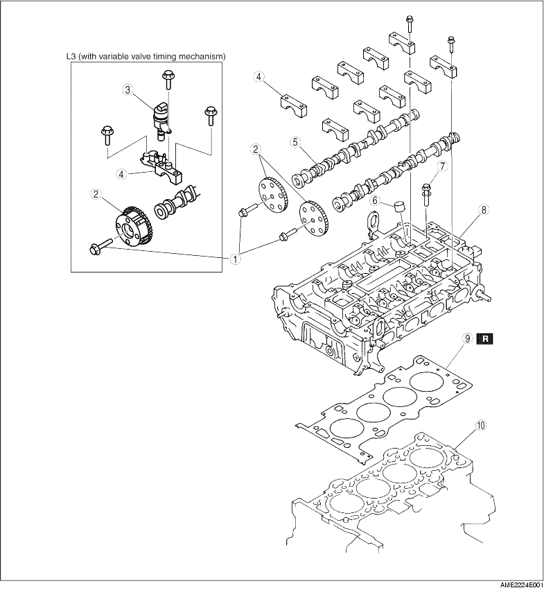

1. Disassemble in the order indicated in the table.

|
1 |
Camshaft sprocket lock bolt,Variable valve timing actuator lock bolt (L3 (with variable valve timing mechanism)) |
|
2 |
Camshaft sprocket,Variable valve timing actuator (L3 (with variable valve timing mechanism)) |
|
3 |
Oil control valve (OCV) (L3 (with variable valve timing mechanism)) |
|
4 |
Camshaft cap |
|
5 |
Camshaft |
|
6 |
Tappet (See Tappet Disassembly Note) |
|
7 |
Cylinder head bolt |
|
8 |
Cylinder head |
|
9 |
Cylinder head gasket |
|
10 |
Cylinder block |
1. Hold the camshaft by using a wrench on the cast hexagon as shown, and loosen the camshaft sprocket lock bolt or variable valve timing actuator lock bolt (L3 (with variable valve timing mechanism)).
L8, LF, L3
L3 (with variable valve timing mechanism)
1. Before removing the camshaft caps, inspect the following.
2. Loosen the camshaft caps bolts in two or three steps in the order shown.
1. Loosen the cylinder head bolts in two or three steps in the order shown.